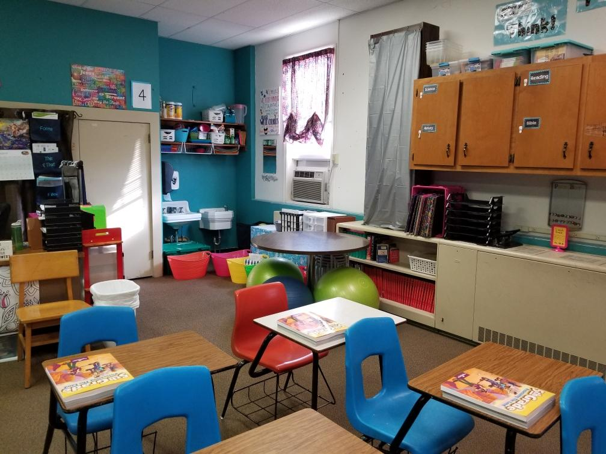
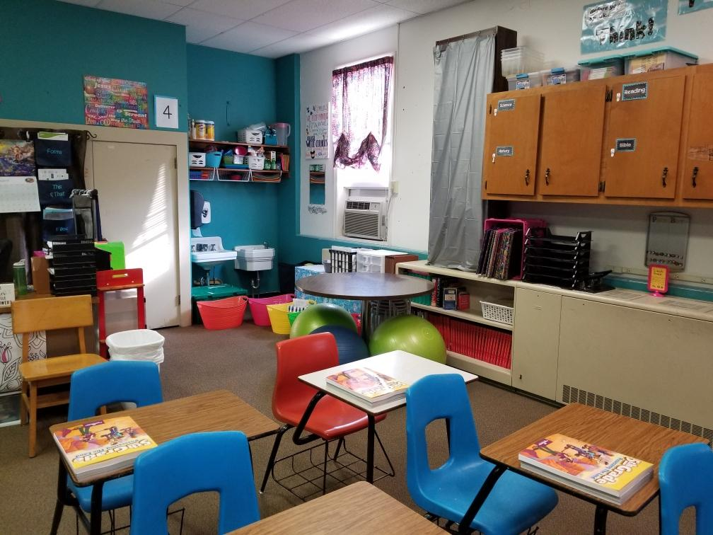

On a normal day of work
A day in my class
The following describes a day in my classroom. I currently work in a non-public school. In our elementary school we have one class per grade level and a math teacher for 4th and 5th grade.
7:50- 8:05am- arrival/ morning work
8:05-8:30am- Morning Meeting/ review of morning work/ Growth mindset
8:30- 9:00am- Bible (Monday and Tuesday- small group study of lesson, Wednesday- Worship Wednesday, Thursday- Whole group lesson review, Friday- elementary chapel)
9- 9:40 am- Specials
9:40-10 am- Snack/ Study Hall
10-11:05 am- Math
11:05-11:10am- break/ bathroom
11:10-12:40 ELA block
- ELA workshop ( guided reading, skill with teacher, read to self, Science/Social Studies, TASK, Technology, Work on Words, Writing)
-Whole group lesson
-Novel Study
-ELA workshop
12:40-1pm- Recess
1-1:40pm- Lunch
1:40-2:20pm- Science
2:20-2-:35 Study Hall/ pack-up/ jobs
STEAM is integrated throughout subjectsTo download an example of my lesson planning please click here to download